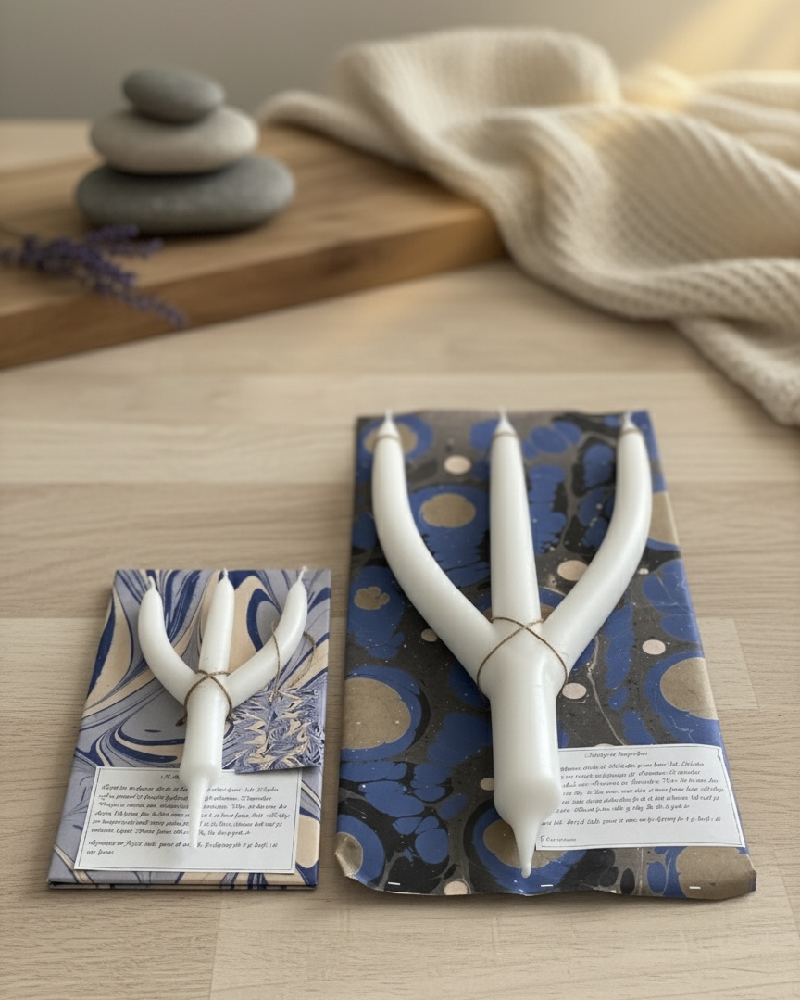

Helligtrekongerslyset
Stort H3k
Julelyset over alle julelys. Staselig, klassisk, tradisjonsrikt og flott.
Slik lager vi H3k-lyset
Det finnes to hovedmetoder å lage lys på. Enten støpes lysene i ulike former, eller så lages de ved dypping i smeltet lysmasse. H3k-lyset vårt er håndlaget ved dypping.
Lyset lages ekstra tykt og stort, slik de gjorde med julelysene fra gammelt av. Da forlenger man brenntiden, og lyset vil kunne brukes gjennom hele julehøytiden. Vi velger også å tilsette ekstra stearin i lysmassen for å forlenge brenntiden ytterligere.
Hvert lys blir møysommelig formet underveis i dyppeprosessen, slik at hvert lys blir unikt. Du vil se at hvert lys har en «dråpe» i enden. Det er beviset på at lyset du holder i hendene, er laget for hånd ved god, gammeldags lysdypping.
Hvert lys får rundt 40 dypp i dyppekaret før det ferdigstilles. Man må sette av hele dagen for at lyset skal bli ferdig. Jo mer ro man har under lysdyppingen, desto finere blir lysene.
Historien bak lyset
Lyset har tradisjoner tilbake til 1800-tallet og var kjent i hele Norden. Fra gammel tid foregikk lysdyppingen på Karimesse, 25. november. Dagen er oppkalt etter Katarina fra Alexandria. Var det klarvær den dagen, ble lysene fine. Man måtte være blid, så brant lysene blidt.
Helligtrekongerslyset skulle tennes på julekvelden og til slutt brennes helt ned på trettendedagen. Brant lyset stille og rolig, ble det et godt år. Lysstumpene fra julen skulle spares til neste års lysdypping for å gi kraft til de nye lysene.
Til jul støpte man de tykkeste og fineste lysene. Det tregrenede lyset skulle tennes til minne om de tre vismennene. Det symboliserte også tro, håp og kjærlighet.
På 1880-tallet kjøpte vanlige folk stearinlys til jul. Resten av året brukte de talglys. Først på 1900-tallet ble stearinlysene tilgjengelige for alle.
Montering i lysestake
Dersom lyset er for tykt til lysestaken du har valgt, kan du enkelt spikke av litt stearin nederst på lyset. Vi bruker oftest en tapetkniv til dette.